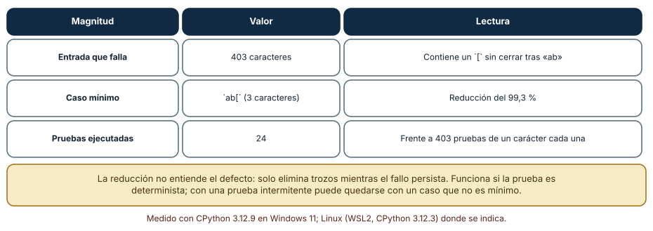
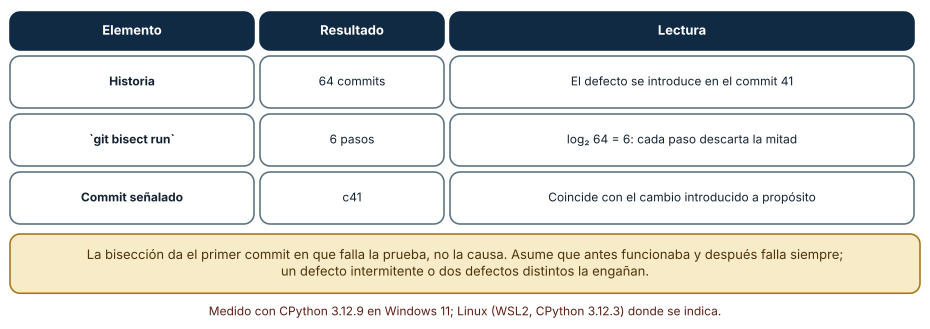
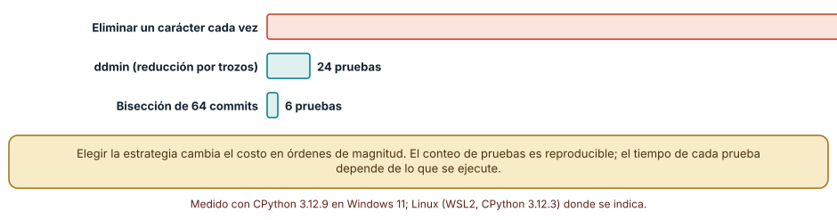

← SE-104 — Dev Containers y entornos desechables · ↑ Parte 08 · 📚 Índice completo · 🌐 Portal · SE-106 — Ergonomía, accesibilidad y productividad del entorno →
Punto profesional y fundamento pedagógico
Punto profesional. La clase existe para reducir un fallo conservando la condición causal y descartando ruido.
Por qué aparece aquí. Se sitúa después de Dev Containers y entornos desechables y antes de Ergonomía, accesibilidad y productividad del entorno: convierte el conocimiento anterior en una decisión observable que la clase siguiente podrá reutilizar. La continuidad se comprueba en el artefacto, no por compartir vocabulario.
Error conceptual que debe corregir. Eliminar pasos hasta que desaparece también el defecto.
Secuencia de aprendizaje. Antes de leer la solución, el estudiante predice el resultado del caso normal y del error conceptual anterior. Luego explica un caso resuelto paso a paso, construye un contraejemplo que cambie la decisión y, sin consultar el texto, reconstruye el mecanismo y lo aplica a una entrada nueva. La secuencia usa predicción, explicación propia, contraste y recuperación. ICAP distingue participación de construcción de conocimiento; How People Learn II exige conectar conocimiento previo, contexto y transferencia; la práctica de recuperación respalda producir de nuevo la explicación tras una demora; y Education for Life and Work exige devolución que explique la causa del error.
Evidencia de aprendizaje. Minimal-reproduction.md con condición, reducción, hipótesis y prueba de regresión. Debe contener predicción previa, observación, explicación causal, contraejemplo, criterio de aceptación y una nota de qué dato haría cambiar la conclusión.
Límite de la conclusión. Un caso mínimo puede ocultar interacciones necesarias en producción.
Trazabilidad fuente → afirmación
| Fuente primaria u oficial | Afirmación que respalda | Lo que no prueba |
|---|---|---|
| Debug Adapter Protocol | Breakpoints, frames, variables y negociación de capacidades; autoridad: Microsoft | No demuestra por sí sola que el artefacto del estudiante sea correcto. |
| Python Debugging and Profiling | Pdb, cprofile, timeit, tracemalloc y límites instrumentales; autoridad: Python Software Foundation | No demuestra por sí sola que el artefacto del estudiante sea correcto. |
| Delta Debugging | formaliza reducción sistemática de causas relevantes | No demuestra por sí sola que el artefacto del estudiante sea correcto. |
Antes de empezar
Esta clase continúa el entorno reproducible de diagnóstico de la Parte 08. Recupera la evidencia de la clase anterior, añade una decisión propia de Reproducción de errores y reducción de casos y deja un artefacto que la clase siguiente deberá consumir. La pregunta activa es: ¿Cuál es el menor caso que conserva el síntoma y separa causa de coincidencia?
Prerrequisitos
- Haber completado la clase anterior o reconstruir su contrato y evidencia.
- Python 3.11 o posterior, terminal, editor y Git; un segundo runtime es opcional y debe declararse.
- Trabajar con fixtures sintéticos: ninguna observación necesita datos de una persona o sistema real.
Problema auténtico
El reporte del entorno reproducible de diagnóstico necesita repositorio completo, 40.000 eventos y una extensión del editor. Cambiar cualquier cosa parece arreglarlo porque la reproducción es lenta e inestable.
Objetivos observables
Al terminar podrás explicar los cinco mecanismos de esta clase, predecir su comportamiento antes de ejecutar, construir un caso normal y uno límite, diagnosticar el fallo controlado, comparar una alternativa y entregar evidencia que otra persona pueda reproducir.
Mapa conceptual
Ver la notación fuente del diagrama
flowchart LR
N1[Reproducción determinista] --> N2[Reducción por dimensiones] --> N3[Una variable por experimento] --> N4[Primera divergencia] --> N5[Caso mínimo / representatividad]
N5 -->|fallo o cambio| N1El mapa se lee como una cadena de razonamiento, no como fases obligatorias del runtime. La flecha de retorno indica que un fallo o cambio de requisito obliga a revisar el modelo inicial; no autoriza a parchear solo la última salida.
Temas y por qué importan
| Tema | Por qué cambia una decisión profesional | Evidencia mínima |
|---|---|---|
| Reproducción determinista | Se fija entrada, semilla, reloj, versión y comando hasta que el síntoma aparece con tasa conocida. | Predicción, traza causal y contraejemplo de Reproducción determinista en minimal-reproduction.md |
| Reducción por dimensiones | Se minimizan datos, código, configuración, tiempo y entorno por separado. | Predicción, traza causal y contraejemplo de Reducción por dimensiones en minimal-reproduction.md |
| Una variable por experimento | Cada ejecución cambia una condición y conserva las demás. | Predicción, traza causal y contraejemplo de Una variable por experimento en minimal-reproduction.md |
| Primera divergencia | Se comparan trazas sana y afectada desde el mismo inicio y se localiza el primer estado distinto, no el último error. | Predicción, traza causal y contraejemplo de Primera divergencia en minimal-reproduction.md |
| Caso mínimo y representatividad | Reducir demasiado puede cambiar el mecanismo: quitar concurrencia elimina la carrera o acortar datos evita resize. | Predicción, traza causal y contraejemplo de Caso mínimo y representatividad en minimal-reproduction.md |
Conceptos y decisiones
1. Reproducción determinista
Se fija entrada, semilla, reloj, versión y comando hasta que el síntoma aparece con tasa conocida. Si es intermitente se registra frecuencia, no se finge determinismo. Una prueba flaky no es prueba de corrección.
2. Reducción por dimensiones
Se minimizan datos, código, configuración, tiempo y entorno por separado. Quitar mitad y conservar el fallo acelera búsqueda, pero dependencias entre elementos requieren volver a comprobar cada paso. El artefacto mínimo sigue explicando dominio.
3. Una variable por experimento
Cada ejecución cambia una condición y conserva las demás. Comparar versiones necesita la misma entrada y configuración. Varias correcciones simultáneas pueden ocultar cuál causó la diferencia y dificultan regresión.
4. Primera divergencia
Se comparan trazas sana y afectada desde el mismo inicio y se localiza el primer estado distinto, no el último error. Esa posición reduce hipótesis causales. Diferencias posteriores pueden ser consecuencias y no deben optimizarse primero.
5. Caso mínimo y representatividad
Reducir demasiado puede cambiar el mecanismo: quitar concurrencia elimina la carrera o acortar datos evita resize. Se conserva la propiedad esencial y se añade un caso representativo separado. Mínimo sirve para causa; representativo para impacto.
Reducir mecánicamente un caso
Un fallo que ocurre con una entrada de 403 caracteres es difícil de razonar; el mismo fallo con tres caracteres casi se explica solo. La reducción automática (*delta debugging*) elimina trozos mientras el fallo persista. Se definió un defecto sintético (falla si aparece ab[ con un corchete sin cerrar) y se aplicó el algoritmo ddmin a una entrada de 403 caracteres: devolvió ab[ (3 caracteres, una reducción del 99,3 %) con 24 pruebas, frente a las 403 de eliminar un carácter cada vez. La reducción no entiende el defecto: solo exige una prueba que responda «sigue fallando o no».

Cómo leer la figura. Las tres filas dan la entrada, el resultado y el costo. Dónde deja de valer: requiere una prueba determinista; con un fallo intermitente, la reducción puede descartar un trozo necesario porque «no falló esta vez» y terminar en un caso que no es mínimo. Además, el resultado es mínimo local, no necesariamente el más corto posible.
Localizar el cambio con bisección
Cuando el defecto está en la historia, git bisect run lo localiza automáticamente. En una historia sintética de 64 commits, con el defecto introducido en el commit 41, la bisección con una prueba automática terminó en 6 pasos y señaló c41, coherente con log₂ 64 = 6. Cada paso descarta la mitad. La bisección entrega *el primer commit en que falla la prueba*, no la causa: ese commit puede ser solo el que expuso un defecto latente. Y asume que antes funcionaba y después falla siempre; un defecto intermitente o dos defectos distintos la engañan.

Cómo leer la figura. La relación entre 64 commits y 6 pasos es logarítmica. Dónde deja de valer: una historia con confirmaciones que no compilan obliga a omitirlas (git bisect skip) y aumenta el número de pasos; una historia no lineal (fusiones) complica la lectura.
Elegir la estrategia por su costo
Las tres estrategias medidas necesitaron 403 pruebas (un carácter cada vez), 24 (ddmin) y 6 (bisección de 64 commits). El conteo de pruebas es reproducible; el tiempo depende de lo que cueste cada prueba. Si cada prueba tarda un minuto, 403 pruebas son casi siete horas y 24 son 24 minutos. Elegir la estrategia correcta reduce el costo en órdenes de magnitud, y lo más barato antes de cualquier técnica es lograr que la prueba sea rápida y determinista.

Cómo leer la figura. La escala de las barras compara el trabajo necesario. Dónde deja de valer: las tres estrategias reducen espacios distintos (entrada, historia); no son intercambiables, y se combinan: primero se localiza el commit y luego se reduce la entrada.
Definiciones de trabajo
- reproducción determinista: se fija entrada, semilla, reloj, versión y comando hasta que el síntoma aparece con tasa conocida.
- reducción por dimensiones: se minimizan datos, código, configuración, tiempo y entorno por separado.
- una variable por experimento: cada ejecución cambia una condición y conserva las demás.
- primera divergencia: se comparan trazas sana y afectada desde el mismo inicio y se localiza el primer estado distinto, no el último error.
- caso mínimo y representatividad: reducir demasiado puede cambiar el mecanismo: quitar concurrencia elimina la carrera o acortar datos evita resize.
Las definiciones son operativas para el entorno reproducible de diagnóstico. No convierten términos con historia más amplia en sinónimos y deben contrastarse con la documentación primaria enlazada al final.
Ejemplo mínimo
python -m unittest tests.test_priority.PriorityTests.test_two_equal_items -v
python reproduce.py --fixture fixtures/two-equal.json --seed 731 --trace evidence/trace.jsonAntes de ejecutar, predice estado, resultado y error. Después registra versión, comando y salida. Si el fragmento es pseudocódigo o pertenece a otro lenguaje, etiquétalo como tal y no afirmes que fue ejecutado.
Ejemplo profesional
En el entorno reproducible de diagnóstico, una investigación conserva síntoma, entorno, reproducción, hipótesis, observaciones, causa, corrección y regresión. La implementación de esta clase debe conservar ese contrato aunque cambie la forma interna. El caso profesional no pregunta únicamente si produce una salida: pregunta quién puede producirla, qué estado observa, cómo falla y qué rastro permite disputar una decisión incorrecta.
Compara el caso normal con autorización falsa, evidencia incompleta, empate y repetición. Un mecanismo es apropiado cuando esas diferencias quedan visibles y localizadas; es peligroso cuando dependen de orden accidental, estado oculto o una convención que el consumidor no puede conocer.
Práctica guiada
- Copia el contrato de entrada y salida antes de escribir implementación.
- Predice el caso normal y un límite; identifica la invariante que no puede romperse.
- Implementa la versión mínima sin I/O dentro del núcleo.
- Ejecuta el caso y conserva comando, versión y salida bajo
evidence/. - Introduce el fallo controlado, reduce la reproducción y formula dos hipótesis rivales.
- Corrige la causa, añade regresión y ejecuta el conjunto completo.
- Compara con otro paradigma o lenguaje indicando qué semántica se preserva.
Ejercicios
- ddmin a mano: reduce la cadena
xxabxx[yyycon la prueba «contieneab[» y cuenta las pruebas. - Pasos: calcula cuántos pasos necesita la bisección para 1 000 commits y para un millón.
- Prueba: escribe el script de prueba para
git bisect runde un defecto tuyo y los códigos de salida que usa. - Mensaje: explica por qué la prueba de reducción debe comparar el mensaje de error y no solo el fallo.
Reto verificable
Entrega implementación, fixtures, pruebas y un informe corto. Se aprueba si otra persona ejecuta desde checkout limpio, obtiene los mismos resultados y puede relacionar cada rama o transformación con una regla del dominio. No se aprueba por cantidad de archivos ni por usar la sintaxis característica del paradigma.
Caso conductor
El entorno reproducible de diagnóstico parte de una inversión de empates en la biblioteca de estructuras y algoritmos, captura versión y entrada mínima, compara un entorno sano con uno afectado y conserva la primera divergencia observable. Cambia después una sola regla o condición y revisa qué archivos, pruebas y trazas debieron modificarse. Esa superficie de cambio alimenta el proyecto final de la parte.
Preguntas frecuentes
¿Por qué es tan importante que la prueba sea determinista?
Porque la reducción y la bisección toman decisiones a partir de «falla o no falla». Un resultado incierto lleva a descartar la mitad equivocada y concluir con confianza algo falso.
¿Qué hago si no puedo reproducir el error?
Se mejora la observación (registros con contexto, identificadores de petición, captura del estado) y se intenta reproducir en condiciones controladas. Mientras no se reproduzca, las conclusiones son hipótesis.
¿El caso mínimo es el más pequeño posible?
No necesariamente: ddmin garantiza un mínimo local (quitar cualquier trozo hace desaparecer el fallo), no el óptimo global.
¿Cuándo omito un commit en la bisección?
Cuando no se puede evaluar (no compila, otro defecto lo impide). Se marca como omitido y la bisección sigue con los demás.
Fallo controlado y diagnóstico
Elimina el tercer evento y el fallo desaparece, pero concluyes que el tercero es causa. Repite permutaciones: el mecanismo real es el resize activado por tamaño, no su contenido.
Registra síntoma, entrada mínima, hipótesis, observación que descarta cada hipótesis, causa, corrección y prueba de regresión. No cambies simultáneamente implementación, fixture y expectativa.
Reproduce el efecto de una prueba intermitente sobre la reducción. Cambia el defecto sintético para que falle solo el 70 % de las veces y aplica ddmin. Síntoma: el resultado cambia entre ejecuciones y a veces conserva caracteres inútiles. Hipótesis: una ejecución sin fallo descarta un trozo que sí era necesario. Prueba: repite la prueba cinco veces en cada decisión (falla si falla alguna) y compara. Conclusión: con pruebas intermitentes se repite cada decisión según la probabilidad del fallo (ver SE-058); el costo crece con las repeticiones. Guarda el caso, la probabilidad y el número de repeticiones en checks.md.
Errores comunes y cómo corregirlos
| Síntoma | Causa | Corrección |
|---|---|---|
| La reducción devuelve resultados distintos | Prueba intermitente | Repetir cada decisión y fijar semillas |
| La bisección señala un commit inocente | Dos defectos o prueba inestable | Estabilizar la prueba y comprobar el commit señalado |
| Se reduce a un caso que ya no falla por la razón original | La prueba acepta cualquier fallo | Comprobar que el mensaje de error sea el mismo |
| El caso mínimo contiene datos reales | No se anonimizó la entrada | Sustituir por datos sintéticos que reproduzcan el fallo |
| Se bisecta sin una historia compilable | Commits intermedios rotos | Usar bisect skip o ramas de integración |
Entorno y archivos clave
work/SE-105/
├── README.md
├── diagnostic_environment/
│ ├── domain.py
│ └── se_105.py
├── fixtures/cases.json
├── tests/test_se_105.py
└── evidence/diagnosis.mdEl README declara plataforma, runtimes, comandos, limpieza y límites. Evita dependencias externas cuando la biblioteca estándar permita observar el mecanismo; si agregas una, fija procedencia y versión.
Seguridad, ética y accesibilidad
- la autorización forma parte del dominio y no se infiere por ausencia de rechazo;
- no uses
eval, reglas descargadas ni serialización insegura; - limita colas, recursión, tamaño de entrada y tiempo de evaluación;
- redacta trazas y conserva una explicación textual además de color o animación;
- una recomendación automatizada debe poder revisarse, impugnarse y corregirse;
- respeta licencias de ejemplos y atribuye adaptaciones.
Puente hacia el trabajo con agentes
Pedir a un agente que «arregle este fallo» con una entrada enorme desperdicia contexto; entregarle el caso mínimo y la prueba que falla le da una tarea acotada y verificable. Un harness puede ejecutar la reducción y la bisección como herramientas y entregar al agente el resultado (caso mínimo y commit señalado) en lugar de pedirle que lo adivine. La condición de determinismo vale también aquí: un agente que modifica el código según una prueba inestable puede «arreglar» el ruido.
Transferencia
Traslada un fixture al segundo modelo, herramienta, plataforma o lenguaje. Compara representación de ausencia, error, mutabilidad, orden y cancelación. La transferencia está lograda cuando el contrato se conserva y las diferencias están explicadas, no cuando la interfaz se parece.
Evaluación y evidencia
| Criterio | Evidencia para aprobar |
|---|---|
| comprensión | explicación causal de los cinco mecanismos |
| corrección | normal, límite, inválido y contraejemplo |
| diseño | estado, efectos y contrato localizables |
| diagnóstico | reproducción mínima y regresión |
| transferencia | comparación semántica, no estética |
| reproducibilidad | versiones, comandos, salida y límites |
Fuentes
- Language Server Protocol 3.18 — Mensajes, capacidades y sincronización entre editor y servidor; autoridad: Microsoft.
- Debug Adapter Protocol — Breakpoints, frames, variables y negociación de capacidades; autoridad: Microsoft.
- Python Debugging and Profiling — Pdb, cprofile, timeit, tracemalloc y límites instrumentales; autoridad: Python Software Foundation.
- Python venv — Aislamiento de intérprete, scripts y entorno virtual; autoridad: Python Software Foundation.
- Development Container Specification — Configuración reproducible de herramientas y ciclo de vida del contenedor; autoridad: Dev Container Specification maintainers.
- Web Content Accessibility Guidelines 2.2 — Percepción, operación por teclado y reducción de barreras en interfaces; autoridad: W3C.
Cada fuente respalda el mecanismo indicado; ninguna demuestra que la implementación del entorno reproducible de diagnóstico sea correcta. Esa afirmación depende de fixtures, pruebas, trazas y revisión reproducible.
- Git:
git bisect: bisección manual y automática, conrunyskip. - Andreas Zeller y Ralf Hildebrandt, «Simplifying and Isolating Failure-Inducing Input», *IEEE Transactions on Software Engineering* 28(2), 2002 DOI: algoritmo
ddminy sus garantías. - Zeller, *Why Programs Fail*: método de depuración sistemática, reducción y causas.
Límites y siguiente paso
El caso mínimo aún debe poder ejecutarlo otra persona con modalidades distintas. La siguiente clase incorpora ergonomía y accesibilidad al entorno, no como decoración.
Glosario
- reproducción determinista: se fija entrada, semilla, reloj, versión y comando hasta que el síntoma aparece con tasa conocida.
- reducción por dimensiones: se minimizan datos, código, configuración, tiempo y entorno por separado.
- una variable por experimento: cada ejecución cambia una condición y conserva las demás.
- primera divergencia: se comparan trazas sana y afectada desde el mismo inicio y se localiza el primer estado distinto, no el último error.
- caso mínimo y representatividad: reducir demasiado puede cambiar el mecanismo: quitar concurrencia elimina la carrera o acortar datos evita resize.
← SE-104 — Dev Containers y entornos desechables · ↑ Parte 08 · 📚 Índice completo · 🌐 Portal · SE-106 — Ergonomía, accesibilidad y productividad del entorno →